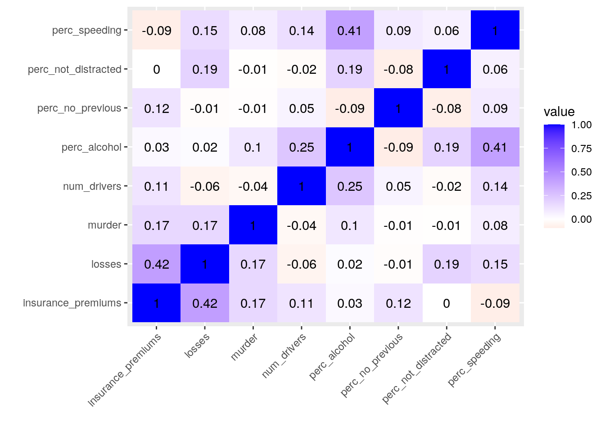
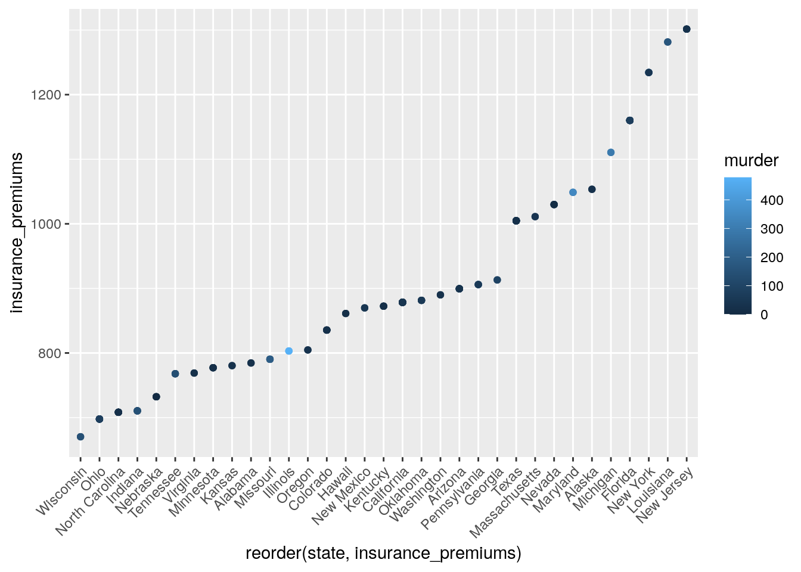
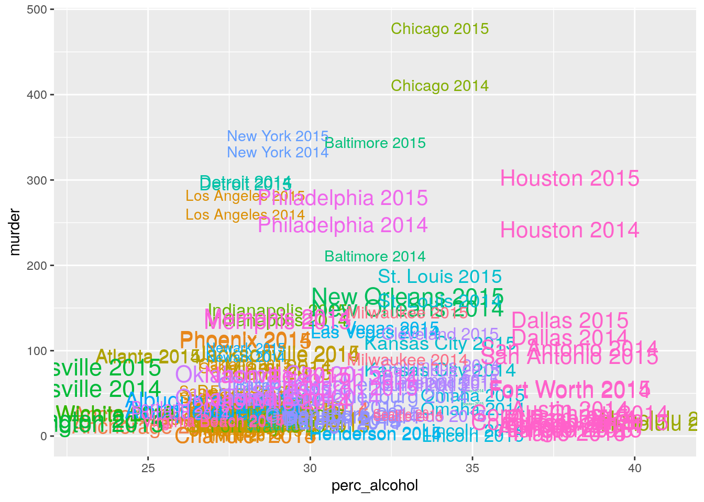
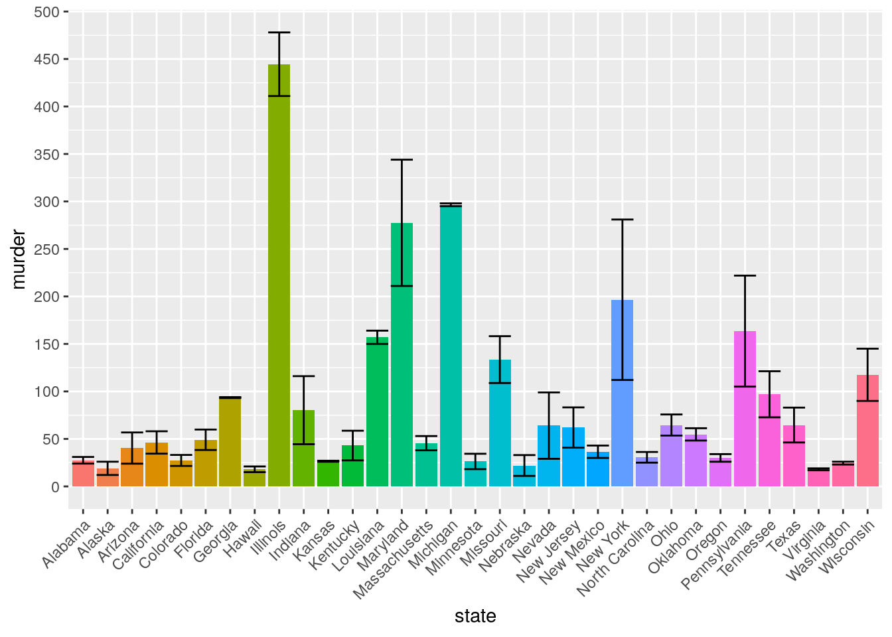
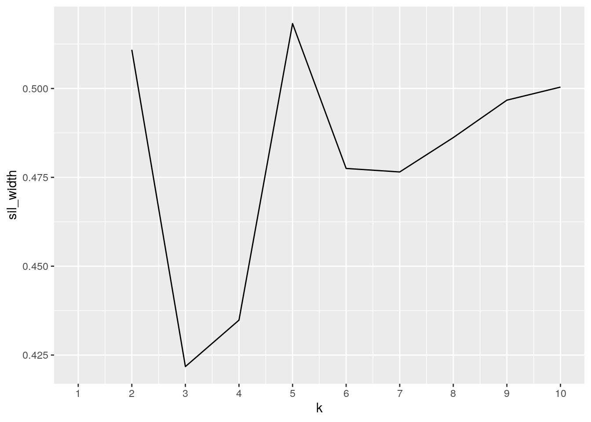
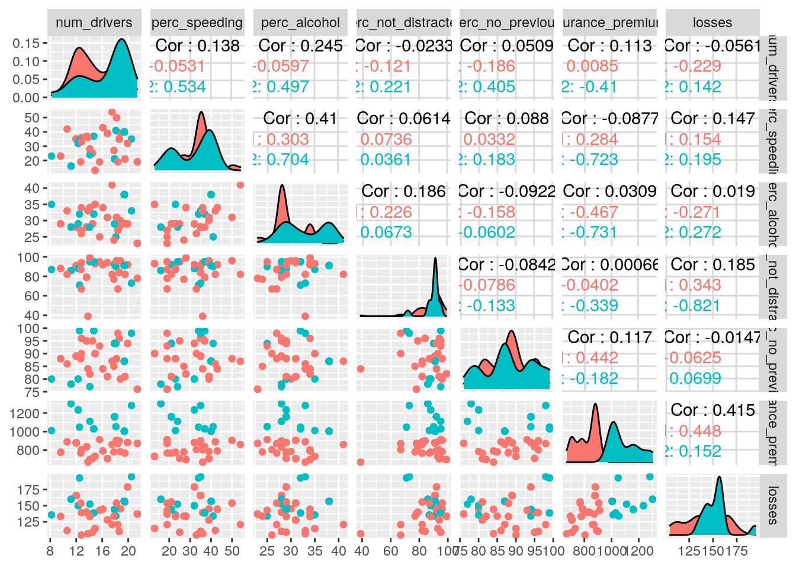

This is an R Markdown document. Markdown is a simple formatting syntax for authoring HTML, PDF, and MS Word documents. For more details on using R Markdown see http://rmarkdown.rstudio.com.
When you click the Knit button a document will be generated that includes both content as well as the output of any embedded R code chunks within the document. You can embed an R code chunk like this:
#install.packages("fivethirtyeight")
library(fivethirtyeight)
#install.packages("tidyverse")
library(tidyverse)## ── Attaching packages ──────────────────────────────────────────────────────── tidyverse 1.3.0 ──## ✔ ggplot2 3.3.0 ✔ purrr 0.3.3
## ✔ tibble 2.1.3 ✔ dplyr 0.8.5
## ✔ tidyr 1.0.0.9000 ✔ stringr 1.4.0
## ✔ readr 1.3.1 ✔ forcats 0.4.0## ── Conflicts ─────────────────────────────────────────────────────────── tidyverse_conflicts() ──
## ✖ dplyr::filter() masks stats::filter()
## ✖ dplyr::lag() masks stats::lag()glimpse(murder_2015_final)## Observations: 83
## Variables: 5
## $ city <chr> "Baltimore", "Chicago", "Houston", "Cleveland", "Washing…
## $ state <chr> "Maryland", "Illinois", "Texas", "Ohio", "D.C.", "Wiscon…
## $ murders_2014 <int> 211, 411, 242, 63, 105, 90, 248, 78, 41, 159, 45, 56, 31…
## $ murders_2015 <int> 344, 478, 303, 120, 162, 145, 280, 109, 72, 188, 73, 81,…
## $ change <int> 133, 67, 61, 57, 57, 55, 32, 31, 31, 29, 28, 25, 22, 22,…glimpse(bad_drivers)## Observations: 51
## Variables: 8
## $ state <chr> "Alabama", "Alaska", "Arizona", "Arkansas", "Cali…
## $ num_drivers <dbl> 18.8, 18.1, 18.6, 22.4, 12.0, 13.6, 10.8, 16.2, 5…
## $ perc_speeding <int> 39, 41, 35, 18, 35, 37, 46, 38, 34, 21, 19, 54, 3…
## $ perc_alcohol <int> 30, 25, 28, 26, 28, 28, 36, 30, 27, 29, 25, 41, 2…
## $ perc_not_distracted <int> 96, 90, 84, 94, 91, 79, 87, 87, 100, 92, 95, 82, …
## $ perc_no_previous <int> 80, 94, 96, 95, 89, 95, 82, 99, 100, 94, 93, 87, …
## $ insurance_premiums <dbl> 784.55, 1053.48, 899.47, 827.34, 878.41, 835.50, …
## $ losses <dbl> 145.08, 133.93, 110.35, 142.39, 165.63, 139.91, 1…data("murder_2015_final")
data("bad_drivers")
murder <- murder_2015_final
drivers <- bad_driversI chose to analyze the data sets “bad_drivers” and “murder_2015_final”. The bad_drivers data set contains numeric information measuring which state has the best and the worst drivers. The variables measuring each states’ driving capabilites are, the number of drivers in the state who were in a car accident, the percentage of accidents that involved speeding, alcohol, no distractions, the percentage of drivers that had no previous driving violations, insurance premiums and losses. The murder_2015_final data set contains information on the number of murders in 2014 and 2015, and the different between the 2 years for various cities in the United States. Both of these data sets were found using the “fivethirtyeight” package. I chose these data sets to analyze the relationships between murder rates and poor driving. I want to determine if states with bad drivers have higer murder rates, possibly due to road rage.
murder <- murder %>% pivot_longer(3:4, values_to = "murder") %>% separate(name, into = c(NA, "year")) %>% select(-change)
drivers_untidy <- drivers %>% pivot_wider(names_from = "state", values_from = "losses")I pivoted murder_2015_final longer to in order to tidy the data set and give year it’s own column, making it a seperate variable. I pivoted the bad_drivers data set wider to make it untidy. In the untidy data set each state has its own column and therefore many rows are filled with NAs.
d_b <- left_join(drivers, murder, by="state")
d_b <- d_b%>%na.omit()Both data sets contained “states” as the common variable. I chose to perform a left join so the murder data set would be added to the bad drivers data set. This was simple join and allowed me to see the driving and murder statistics for each state very clearly. I omitted all the NA values so the data would be easier to work with.
d_b %>% filter(state == "California" & losses>=150)## # A tibble: 30 x 11
## state num_drivers perc_speeding perc_alcohol perc_not_distra…
## <chr> <dbl> <int> <int> <int>
## 1 Cali… 12 35 28 91
## 2 Cali… 12 35 28 91
## 3 Cali… 12 35 28 91
## 4 Cali… 12 35 28 91
## 5 Cali… 12 35 28 91
## 6 Cali… 12 35 28 91
## 7 Cali… 12 35 28 91
## 8 Cali… 12 35 28 91
## 9 Cali… 12 35 28 91
## 10 Cali… 12 35 28 91
## # … with 20 more rows, and 6 more variables: perc_no_previous <int>,
## # insurance_premiums <dbl>, losses <dbl>, city <chr>, year <chr>,
## # murder <int>d_b %>% arrange(insurance_premiums)## # A tibble: 164 x 11
## state num_drivers perc_speeding perc_alcohol perc_not_distra…
## <chr> <dbl> <int> <int> <int>
## 1 Wisc… 13.8 36 33 39
## 2 Wisc… 13.8 36 33 39
## 3 Ohio 14.1 28 34 99
## 4 Ohio 14.1 28 34 99
## 5 Ohio 14.1 28 34 99
## 6 Ohio 14.1 28 34 99
## 7 Ohio 14.1 28 34 99
## 8 Ohio 14.1 28 34 99
## 9 Ohio 14.1 28 34 99
## 10 Ohio 14.1 28 34 99
## # … with 154 more rows, and 6 more variables: perc_no_previous <int>,
## # insurance_premiums <dbl>, losses <dbl>, city <chr>, year <chr>,
## # murder <int>d_b %>% arrange(desc(state), desc(murder), desc(insurance_premiums))## # A tibble: 164 x 11
## state num_drivers perc_speeding perc_alcohol perc_not_distra…
## <chr> <dbl> <int> <int> <int>
## 1 Wisc… 13.8 36 33 39
## 2 Wisc… 13.8 36 33 39
## 3 Wash… 10.6 42 33 82
## 4 Wash… 10.6 42 33 82
## 5 Virg… 12.7 19 27 87
## 6 Virg… 12.7 19 27 87
## 7 Texas 19.4 40 38 91
## 8 Texas 19.4 40 38 91
## 9 Texas 19.4 40 38 91
## 10 Texas 19.4 40 38 91
## # … with 154 more rows, and 6 more variables: perc_no_previous <int>,
## # insurance_premiums <dbl>, losses <dbl>, city <chr>, year <chr>,
## # murder <int>d_b %>% select(city, num_drivers)## # A tibble: 164 x 2
## city num_drivers
## <chr> <dbl>
## 1 Mobile 18.8
## 2 Mobile 18.8
## 3 Anchorage 18.1
## 4 Anchorage 18.1
## 5 Mesa 18.6
## 6 Mesa 18.6
## 7 Chandler 18.6
## 8 Chandler 18.6
## 9 Phoenix 18.6
## 10 Phoenix 18.6
## # … with 154 more rowsd_b %>% mutate(meanlosses = mean(losses))## # A tibble: 164 x 12
## state num_drivers perc_speeding perc_alcohol perc_not_distra…
## <chr> <dbl> <int> <int> <int>
## 1 Alab… 18.8 39 30 96
## 2 Alab… 18.8 39 30 96
## 3 Alas… 18.1 41 25 90
## 4 Alas… 18.1 41 25 90
## 5 Ariz… 18.6 35 28 84
## 6 Ariz… 18.6 35 28 84
## 7 Ariz… 18.6 35 28 84
## 8 Ariz… 18.6 35 28 84
## 9 Ariz… 18.6 35 28 84
## 10 Ariz… 18.6 35 28 84
## # … with 154 more rows, and 7 more variables: perc_no_previous <int>,
## # insurance_premiums <dbl>, losses <dbl>, city <chr>, year <chr>,
## # murder <int>, meanlosses <dbl>d_b %>% summarize(mean(num_drivers, na.rm=T), n(), n_distinct(city))## # A tibble: 1 x 3
## `mean(num_drivers, na.rm = T)` `n()` `n_distinct(city)`
## <dbl> <int> <int>
## 1 15.5 164 82d_b %>% group_by(state, city)## # A tibble: 164 x 11
## # Groups: state, city [82]
## state num_drivers perc_speeding perc_alcohol perc_not_distra…
## <chr> <dbl> <int> <int> <int>
## 1 Alab… 18.8 39 30 96
## 2 Alab… 18.8 39 30 96
## 3 Alas… 18.1 41 25 90
## 4 Alas… 18.1 41 25 90
## 5 Ariz… 18.6 35 28 84
## 6 Ariz… 18.6 35 28 84
## 7 Ariz… 18.6 35 28 84
## 8 Ariz… 18.6 35 28 84
## 9 Ariz… 18.6 35 28 84
## 10 Ariz… 18.6 35 28 84
## # … with 154 more rows, and 6 more variables: perc_no_previous <int>,
## # insurance_premiums <dbl>, losses <dbl>, city <chr>, year <chr>,
## # murder <int>d_b %>% summarize(mean(num_drivers, na.rm=T))## # A tibble: 1 x 1
## `mean(num_drivers, na.rm = T)`
## <dbl>
## 1 15.5d_b %>% summarize(sd(perc_speeding, na.rm = T)) ## # A tibble: 1 x 1
## `sd(perc_speeding, na.rm = T)`
## <dbl>
## 1 8.72d_b %>% summarize(cor(insurance_premiums, murder))## # A tibble: 1 x 1
## `cor(insurance_premiums, murder)`
## <dbl>
## 1 0.165d_b %>% summarize(min(perc_not_distracted))## # A tibble: 1 x 1
## `min(perc_not_distracted)`
## <int>
## 1 39d_b %>% summarize(max(perc_no_previous))## # A tibble: 1 x 1
## `max(perc_no_previous)`
## <int>
## 1 99d_b %>% summarize(IQR(losses)) ## # A tibble: 1 x 1
## `IQR(losses)`
## <dbl>
## 1 26.3d_b %>% summarize(median(murder))## # A tibble: 1 x 1
## `median(murder)`
## <dbl>
## 1 34.5d_b %>% group_by(state, city) %>% summarize(mean(num_drivers))## # A tibble: 82 x 3
## # Groups: state [33]
## state city `mean(num_drivers)`
## <chr> <chr> <dbl>
## 1 Alabama Mobile 18.8
## 2 Alaska Anchorage 18.1
## 3 Arizona Chandler 18.6
## 4 Arizona Mesa 18.6
## 5 Arizona Phoenix 18.6
## 6 Arizona Tucson 18.6
## 7 California Anaheim 12
## 8 California Bakersfield 12
## 9 California Chula Vista 12
## 10 California Fresno 12
## # … with 72 more rowsIn the first part of the wrangling data I exemplify my ability to manipulate my joined data set in order to find different information. I can filter for certain states, and the data set can be manipulated to be in the order of descending numeric variables like, insurance premiums, losses, and percentage of drivers that were not distracted, speeding, drunk or have no previous offenses. Since I am interested in the correlation between bad driving and the numer of murders in each state, filtering by state and murder rate is the most useful.
In the second part of wrangling I summarize the data set through various different functions. Using the summarize functions allows me to see snapshots of the different numeric varaibles instead of having to search through the entire data set. The most useful summary tool is the cor function which allows me to see the correlation between insurance premiums and the number of murders. In this case, the correlation is 0.165334 which is very weak.
d_b%>%select_if(is.numeric)%>%cor%>%as.data.frame%>%rownames_to_column%>%pivot_longer(-1)%>%ggplot(aes(rowname,name,fill=value))+geom_tile()+geom_text(aes(label=round(value,2)))+xlab("")+ylab("")+scale_fill_gradient2(low="red",high="blue")+theme(axis.text.x = element_text(angle=45, hjust=1)) This correlation heat map shows the strength of the correlation between the numeric variables. The darker the shade of blue, the stronger the correlaiton. This plot does not show that any of the numeric variables are strongly correlated. The highest correlation value is 0.42 between insurance premiums and losses. The second highest correlation value is 0.41 which is between the percentage of drivers that were drunk and the percentage of dirvers that were speeding. The number of murders is not strongly correlated with any of the driving variables. However, losses and insurance premiums have the highest correlation with murders with a value of 0.17.
d_b %>% ggplot(aes(reorder(state, insurance_premiums), insurance_premiums, color=murder)) + geom_point()+theme(axis.text.x = element_text(angle=45, hjust=1)) This plot orders the states from lowest to highestt insurance premiums, and the color of the data marker represents the number of murders in the state. Illinois has fairly low insurance premiums, but one of the highest murder rates. On the other hand, New Jersey has the highest insurance premiums, but a low murder rate. This plot shows that there is no strong correlation between murder rate and insurance premiums for each state.
d_b %>% ggplot(aes(perc_alcohol, murder, color=state, size=num_drivers,label=paste(city,year)))+
geom_text()+theme(legend.position = "none") In this plot the number of drivers involved in a car accident in each state is represented in the size of the font, the larger the font the more drivers involved in an accident. The plot is comparing the percentage of drunk drivers in a car accident and the murder rate of different cities, and each state has its own unique color. In almost every city the murder rate increased from 2014 to 2015. Although it is hard to read because of the overlapping text, there is no obvious relationship between the percentage of drunk drivers and the murder rates in each state.
d_b %>% ggplot(aes(state, murder, fill=state))+ geom_bar(stat = "summary")+theme(legend.position="none",axis.text.x = element_text(angle=45, hjust=1))+geom_errorbar(stat = "summary")+scale_y_continuous(breaks = seq(0,500,50))## No summary function supplied, defaulting to `mean_se()`
## No summary function supplied, defaulting to `mean_se()` This bar graph compares the murder rates between the different states. The states with the highest number of murders are, Illinois, Maryland, Michigan, New York and Pennsylvania. Michigan has a very small error bar while Maryland, New York and Pennsylvania have very large error bars. The states with the lowerst murder rates are, Alaska, Hawaii, Nebraska and Virginia. The difference in murder rates between the states could be due the difference in state population and the number of large urban centers, although that relationship is not measured in this plot.
d_b %>% select_if(is.numeric) %>% cor## num_drivers perc_speeding perc_alcohol perc_not_distracted
## num_drivers 1.00000000 0.13831828 0.24526589 -0.0233081227
## perc_speeding 0.13831828 1.00000000 0.40952364 0.0614360445
## perc_alcohol 0.24526589 0.40952364 1.00000000 0.1858666115
## perc_not_distracted -0.02330812 0.06143604 0.18586661 1.0000000000
## perc_no_previous 0.05085153 0.08798674 -0.09221386 -0.0841689263
## insurance_premiums 0.11274114 -0.08765186 0.03085291 0.0006595165
## losses -0.05605930 0.14676190 0.01896512 0.1853592120
## murder -0.03732636 0.07523417 0.10351544 -0.0067699712
## perc_no_previous insurance_premiums losses
## num_drivers 0.050851533 0.1127411422 -0.05605930
## perc_speeding 0.087986743 -0.0876518617 0.14676190
## perc_alcohol -0.092213864 0.0308529074 0.01896512
## perc_not_distracted -0.084168926 0.0006595165 0.18535921
## perc_no_previous 1.000000000 0.1168851035 -0.01470896
## insurance_premiums 0.116885103 1.0000000000 0.41509896
## losses -0.014708963 0.4150989566 1.00000000
## murder -0.008032047 0.1653340044 0.16699939
## murder
## num_drivers -0.037326363
## perc_speeding 0.075234169
## perc_alcohol 0.103515442
## perc_not_distracted -0.006769971
## perc_no_previous -0.008032047
## insurance_premiums 0.165334004
## losses 0.166999391
## murder 1.000000000library(cluster)
sil_width<-vector()
for(i in 2:10){
pam_fit <- d_b%>%select_if(is.numeric)%>%pam(i)
sil_width[i] <- pam_fit$silinfo$avg.width
}
ggplot()+geom_line(aes(x=1:10,y=sil_width))+scale_x_continuous(name="k",breaks=1:10)## Warning: Removed 1 row(s) containing missing values (geom_path).
pam_fit <- d_b%>%select_if(is.numeric)%>%pam(2)
pam_fit## Medoids:
## ID num_drivers perc_speeding perc_alcohol perc_not_distracted
## [1,] 43 13.6 37 28 79
## [2,] 4 18.1 41 25 90
## perc_no_previous insurance_premiums losses murder
## [1,] 95 835.50 139.91 31
## [2,] 94 1053.48 133.93 26
## Clustering vector:
## [1] 1 1 2 2 1 1 1 1 1 1 1 1 1 1 1 1 1 1 1 1 1 1 1 1 1 1 1 1 1 1 1 1 1 1 1 1 1
## [38] 1 1 1 1 1 1 1 1 1 1 1 2 2 2 2 2 2 2 2 2 2 1 1 1 1 1 1 1 1 1 1 1 1 1 1 1 1
## [75] 2 2 2 2 2 2 2 2 1 1 1 1 1 1 1 1 1 1 1 1 2 2 2 2 2 2 2 2 1 1 2 2 2 2 1 1 1
## [112] 1 1 1 1 1 1 1 1 1 1 1 1 1 1 1 1 1 1 1 1 1 1 1 1 1 1 1 2 2 2 2 2 2 2 2 2 2
## [149] 2 2 2 2 2 2 2 2 2 2 1 1 1 1 1 1
## Objective function:
## build swap
## 110.3900 107.0071
##
## Available components:
## [1] "medoids" "id.med" "clustering" "objective" "isolation"
## [6] "clusinfo" "silinfo" "diss" "call" "data"library(GGally)##
## Attaching package: 'GGally'## The following object is masked from 'package:dplyr':
##
## nasad_b%>%mutate(cluster=as.factor(pam_fit$clustering))%>%
ggpairs(columns = 2:8,aes(color=cluster)) The first step to the clustering analysis is determing the corect number of clusters to analyze the data. The line graph shows that 2 or 5 clusters would be the best to analyze the data because these points have the highest sil_width values. I chose to use 2 clusters because that is more manageable than 5. The cluster analysis graphs show the relationship of the numeric varaibles between the clusters. Overall, there not a strong correlation between the numeric variables. The strongest overall correlation is 0.415 between losses and insurance premiums. The smallest correlation value is -0.0922 between the percent of drivers that were not distracted and the percent of drivers that had no previous violations. Throughout my entire analysis I have found no significant correlation between bad driving and the murder rates in each state. There appears to be no relationship between the bad_drivers dataset and the murder_2015_final dataset.
Note that the echo = FALSE parameter was added to the code chunk to prevent printing of the R code that generated the plot.